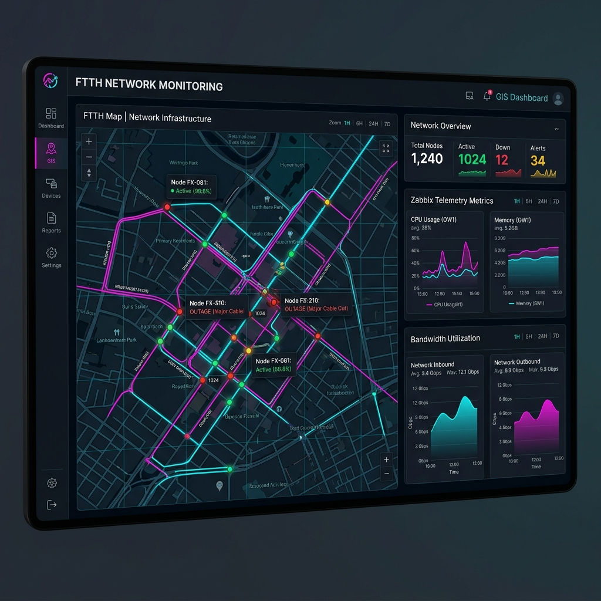
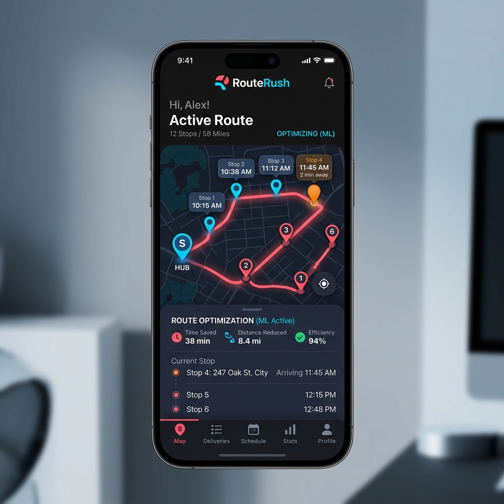

Overview
A web-based information system built to digitize MSME (UMKM) data collection and business promotion in Kelurahan Sutorejo. The platform helps local business owners showcase their products and services online while allowing village administrators to manage MSME data efficiently.
The challenge
- Local MSME data was previously recorded manually, making tracking and business promotion difficult.
- Small business owners needed an intuitive platform to display product listings without complex technical overhead.
The approach
- Engineered a responsive full-stack web application using Laravel 12.
- Designed a relational PostgreSQL database schema for structured data management.
- Deployed and hosted the application on AWS EC2 with automated web server configuration.
The result
- Digitized MSME data management for local administrative use.
- Increased online visibility for local community businesses in Sutorejo.
- High performance and reliable uptime hosted on AWS infrastructure.
Gallery Preview

